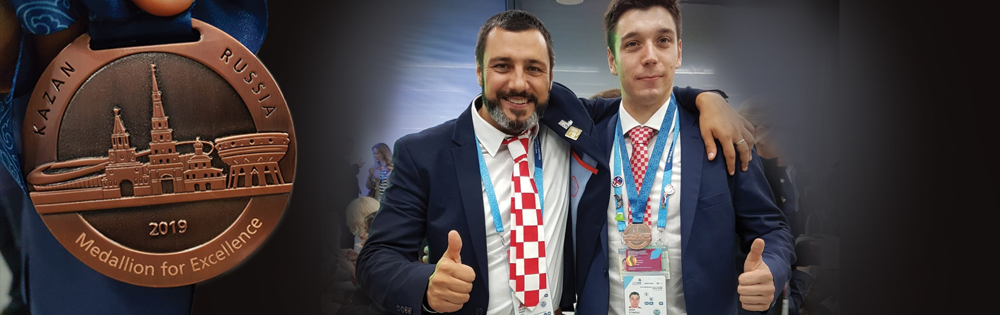

Student Josip Stanešić 12. je sistemaš svijeta i dobitnik medalje izvrsnosti.
Nakon godinu dana priprema za natjecanje WorldSkills
Kazan 2019 na kojem je sudjelovalo 1300 natjecatelja iz
cijelog svijeta, trud se itekako isplatio. Josip,
student 3. godine preddiplomskog studija sistemskog
inženjerstva osvojio je 12. mjesto u vještini IT
Networks and System Administration te osvojio medalju
izvrsnosti! Čestitke Josipu ali i njegovim/našim
mentorima koji su ga pripremali za ovo natjecanje –
voditelju studija sistemskog inženjerstva Silviju
Papiću, voditelju katedre za operacijske sustave –
Vedranu Dakiću i asistentu na studiju sistemskog
inženjerstva – Jasminu Redžepagiću. Čestitke i našem
studentu 3.godine preddiplomskog studija programskog
inženjerstva Josipu Horvatu i mentoru voditelju katedre
za programsko inženjerstvo - Goranu Đambiću na osvojenom
16.mjestu u vještini IT Software Solutions for Business.